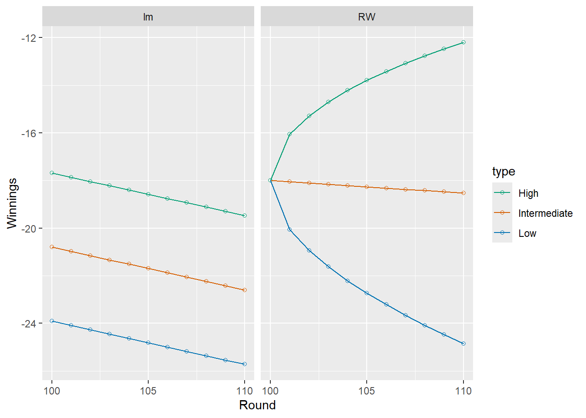

This module will represent a bit of departure from the flow of the last few by taking us back to a more classical application of predictive modeling: forecasting from time series. But despite the fact that its an older field of study than neural networks, its still highly relevant and frequently used in fields from actuarial science to economics to physics so its worth dedicating a module to understanding some of the basics. For the full experience, you’ll need a specialized courses but we’ll do what we can here.
A time series is a single set of measurements on a quantity that is evolving over time. For example, the plot below shows the inflation-adjusted percent change in tuition and fees for private universities from 1971-2018. This is time series data at its finest (or most depressing?)
The golden egg of time series is forecasting: predicting future values from the past. As such, we would like to develop statistical models for describing how the present value \(Y_T\) of a time series depends on various predictors (yeah, we’ve done lots of that type of stuff), but more uniquely to time series, how the value of \(Y_T\) depends on past values of \(Y_t\) for \(t < T\). In fact, this latter is really the fundamental difference between times series and the regression models considered thus far in the course.
Time series modeling requires a bit of background in random variables, but nothing too far beyond Math 37 knowledge. There are really just three facts to recall:
Expected value is the weighted average of the possible values of a random variable
Expected value distributes across sums of random variables
Variance distributes across sums of random variables, but only if those random variables are independent.
To illustrate and motivate some of the core models of time series, let’s look at one of my favorite games: roulette
Spinning Wheel
In (American) roulette, a ball is dropped into a spinning wheel with 38 slots, 18 of which are colored red, 18 black, and 2 green1. The red and black slots are labelled with the numbers 1-36 in alternating values while the green slots are labelled 0 and 00. You can place various bets with various payouts on where the ball will land when it stops spinning2. One is that the ball will land on a red slot. The payoff for this bet is 1:1 meaning if you bet $1 on red and the ball lands on red, you get your $1 back plus 1. Otherwise, you lose your dollar.
To model this with random variables, let \(\varepsilon_t\) be the amount won on the \(t\)th play of roulette. Then \(\varepsilon_t\) will be either 1 or -1 with respective probabilities 18/38 and 20/38. The expected value for this bet is thus \[(1)(18/38) + (-1)(20/38) = -1/19 \approx -0.0526.\]
The fact that this is negative indicates a house advantage: the casino gains about five cents for every dollar bet on red in roulette. In fact, all the bets in roulette have a house advantage of at least 0.0526 which is why it is a bad game to play.
Suppose now that you play \(T\) games. Then the amount of money in your pocket will be given by the sum \[Y_T = y_0 + \sum_{i=1}^T \varepsilon_t\] where \(y_0\) is the initial amount you walk in with. You could also express this relationship iteratively as \[
Y_t = Y_{t-1}+ \varepsilon_t
\] for \(t=1,...,T\). This is an example of a random walk, a time series in which each value equals the previous value plus a random disturbance or “noise” term. The noise terms, denoted by \(\varepsilon_t\), are assumed to be independent and identically distributed (iid) random variables. If the \(\varepsilon_t\) have mean zero, then the process has no long-term trend and is called a symmetric random walk. In this case, we call the \(\varepsilon_t\) process white noise.
However, if the \(\varepsilon_t\) have a nonzero mean \(\mu\) like in the above example where \(\mu \approx -0.0526\), the random walk exhibits a drift: it tends to increase (if \(\mu > 0\)) or decrease (if \(\mu < 0\)) over time. This is called a random walk with drift. We can simulate a sample run of our roulette random walk as follows:
Notice that your net winnings go steadily down throughout the night. In fact, one can show that there is a very small probability (less than 5%) of being ahead after 100 rounds.
Let’s compare the above plot, which tracks your cumulative winnings, with a plot of the actual results from each round: \[
\varepsilon_t = \Delta y_t
\]
This is called the change3 process for the time series. For roulette, the results just jump randomly between 1 and -1 with no distinguishable pattern whereas the cumulative winnings themselves showed a downward trend. This is the fundamental difference between a random walk (\(y_t\) = the cumulative winnings) and its corresponding change process (\(\varepsilon_t\) = the results of individual rounds).
Forecasting
The plot of winnings vs rounds looks roughly linear so a naive way to forecast your winnings after 101 rounds of play would be to fit a linear model using winnings as the response and time (i.e. number of rounds played) as the predictor
and in the long run, might provide some good predictions, but in the short run it is going to be shit because it is trying to capture the overall trend in all observations and not weighting the recent points more heavily. For example, the line predicts our net winnings will be less than -20 at round 101 which is impossible given we are at -18 after round 100 due to a recent string of good fortune and we can only lose $1 per round. Thinking of this process as a random walk provides a much better, but still roughly linear way of approximating future values.
To see how, we recall two facts stated in the introduction about distributing expected value and variance. With these in mind, suppose that the current value of our winnings is \(y_T\) and we wish to predict the value of our winnings after \(n\) additional rounds. Since our net winnings in the next \(n\) rounds is a sum of \(n\) iid random variables with mean \(\mu = -1/19\), this means that the expected value of our winnings after \(n\) more rounds will be \[
y_T-n/19.
\] Furthermore, the variance of a single round result is \(\sigma^2 \approx 1\) as shown by the following calculation:
mu=-1/1918/38*(1-mu)^2+(20/38)*(-1-mu)^2
[1] 0.9972299
so the variance of our additional winnings after \(n\) rounds will be \(n\sigma^2 \approx n\). We can use this to form not just predictions, but prediction intervals via the “\(\pm 2*SD\)” heuristic: we will predict that our new winnings after \(n\) additional rounds will be in the interval \[
y_T -n/19 \pm 2\sqrt{n}
\] with 95% probability (or we could use some other factor times the SD if we wanted a different prediction probability).
In forecasting, the lower endpoint, midpoint, and upper endpoint of the 95% prediction interval are referred to respectively as the “Low-Intermediate-High” projections. The plot below compares the random walk projections with those obtained from linear regression for the next 10 rounds.
# Our old friend, the cb_palettecb_palette <-c("#000000", # black"#E69F00", # orange"#56B4E9", # sky blue"#009E73", # bluish green"#F0E442", # yellow"#0072B2", # blue"#D55E00", # vermillion"#CC79A7"# reddish purple)# Calculate RW projections and convert to long formaty100=game$Winnings[100]expected=y100-(0:10)/19proj_rw=data.frame(Round=100:110,Low=expected-2*sqrt(0:10),Intermediate=expected,High=expected+2*sqrt(0:10)) |>pivot_longer(-Round,values_to="value",names_to="type")proj_rw$model="RW"#Calculate lm projections proj_lm=data.frame(Round=100:110,predict(win_lm,newdata=data.frame(Round=100:110),interval="prediction") )names(proj_lm)[2:4]=c("Intermediate","Low","High")proj_lm=proj_lm |>pivot_longer(-Round,values_to="value",names_to="type" ) |>mutate(model="lm")# Merge Predictions and plotproj_all=rbind(proj_rw,proj_lm)proj_all |>ggplot(aes(x=Round,y=value,color=type))+geom_point(shape=1)+geom_line()+facet_grid(.~model)+ylab("Winnings")+scale_color_manual(values=cb_palette[c(7,1,4)])+scale_x_continuous(breaks=c(100,105,110))

Notice the random walk model at least provides some realistic forecasts and also takes into account the more realistic idea that our forecast uncertainty is increasing over time.
Is tuition a random walk?
The example from the last section was unrealistic for most real world forecasting problems because we knew the exact distribution of the noise4\(\varepsilon_t\). For most time series, we don’t know this information, but instead have to estimate the mean and variance of the noise from past data. The tuition data, for example, looks like it has an upward linear trend which is what we would expect from a random walk model with positive drift, but how can we use this observation to make forecasts about what will happen in the next ten years?
The key is to look at sample statistics for the year-to-year change scores of tuition. The “diff” command can be used to calculate them. The NA is needed because there is no difference from the first point. This is important to remember in working with change scores: in a sample of size \(n\), there are only \(n-1\) changes.
After the first few years (we could remove these if you’re worried), this essentially looks like a sequence of iid random variables which makes it reasonable to use a random walk to model tuition prices. To do so, we need to compute the sample mean and sample SD for the differences which will take the place of \(\mu =-1/19\) and \(\sigma \approx 1\) in the last example
cbar=mean(tuition$Private.Diff,na.rm=TRUE)c_sd=sd(tuition$Private.Diff,na.rm=TRUE)cat("Mean=",cbar,"\nStd Dev =", c_sd)
Mean= 0.04595745
Std Dev = 0.04014428
The first number tells us that private university tuition has increased by an average of 4.6% per year above inflation (ugh). Now we can form forecast intervals as before
so from that perspective, maybe you can feel good about this data as a Pacific student?
A note on training and testing time series
Unlike in other machine learning scenarios, it is common to use the early parts of a time series as training data and then the tail end as the testing data. For example, in our tuition model above, we could take the training data as everything before 2010 and then use the remaining years as a test set to compare with our predictions:
How do you know if a random walk model works for your data?
The idea of reducing a random walk to a sequence of iid random variables by taking differences is an example of filtering, a key concept in time series analysis. While a random walk exhibits “unstable” behavior (its mean and variance change over time) the first differences (i.e., change scores) often have a constant mean and variance, making them easier to analyze and more suitable for forecasting.
More generally, any time series with constant mean and variance over time is said to be stationary in mean and variance, or second-order stationary. There’s much more we could say about stationarity, but for now, just think of a sequence of iid random variables as the classic example of a stationary process. Its distribution doesn’t change over time so neither do its mean of variance. While you can have processes that are stationary without being a white noise process, you can’t have a white noise process that isn’t stationary. Hopefully that logic makes sense.
Random walks, however, are not stationary. Their variance grows linearly with time so even if they have mean zero, they are still non-stationary in variance. This is why the process of filtering is so important. It helps us recognize if something COULD be a random walk by examining whether the change scores are stationary in mean and variance
To illustrate this process, let’s look again at the plot of differences in tuition increases with lines at the sample mean change \(\bar{c}\) and \(\bar{c}\pm3*s_c\). This type of plot is often referred to as a control chart.
The observations are roughly centered at the mean of change scores
All observations lie within the mean +/- 3SD bands
These two points provide some evidence in favor of stationarity in mean (point 1) and variance (point 2). In other words, the time series doesn’t appear to be shifting too much in terms of central tendency or spread over time.
That said, the data from before 1980 seem to suggest a different average level, which may indicate a structural change or regime shift. To explore this further, we might consider re-examining the plot with those earlier years removed. The resulting control chart is shown below:
That looks a little more stationary to me and might yield better predictions moving forward.
Runs Test
Another common method for checking the random walk assumption is to test the change scores for evidence of runs: unusually long sequences of consecutive ups and downs. For example, suppose we toss a coin 100 times. You would expect some long sequences of heads and tails. We conduct one such experiment using the command rle to look at the distribution of runs in our randomly generate sequence
We did get one run of length 6 and several other close in length.
I once heard about a professor who would do an experiment in which they would have one student write a “random” sequence of H/T on the board and another generate then using a coin. They would leave the room while they did this and come back in at the end to aww their students with their magic ability to guess which was generated by the coin. How? People always tends to underestimate the ability of random sequences to produce long runs over large sequences of tosses so the one made up by the student would always have much shorter runs.
The moral is that is that recognizing such runs by sight may be counterintuitive but we could still run a large number of Monte Carlo simulations to see what maximum lengths would be expected.
Getting max runs of 5-10 is typical, but if we get max runs of less than five or more than 10 heads in a row, we might expect some underlying bias or lack of independence in the coin tossing process.
A runs test is a formal hypothesis test to determine if a sequence of ups/downs in a runs process is generated by a fair coin. The null hypothesis is that it is. You can apply a runs test through the tseries package
Runs Test
data: runs
Standard Normal = -2.3283, p-value = 0.01989
alternative hypothesis: two.sided
In this case, we obtained a small p-value, which suggests that the independence assumption may be violated. If we look at the years after 1980, we no longer see the violation:
Runs Test
data: runs
Standard Normal = 0.2357, p-value = 0.8137
alternative hypothesis: two.sided
Therefore, I would feel better about excluding those early years if we want to use a random walk model for predictions.
Random Walk Summary
A time series follows a random walk model if the observation process \(Y_t\) follows the relationship \[
Y_t = Y_{t-1} + \varepsilon_t
\] where the change scores \(\varepsilon_t\) are iid random variables with the same expected value \(\mu\) and variance \(\sigma^2\). A random walk is a good model for data only if the change scores form a stationary time series although this condition is not sufficient (only necessary).
If we are given the value \(y_T\) of a random walk at time \(T\), then the expected value at time \(Y_{T+t}\) is \[
E(Y_{T+t}) = y_T + t \mu
\] for all \(t \neq 0\) while the variance is \[
Var(Y_{T+t}) = t \sigma^2.
\] These results can be used to form forecast intervals \[
y_T+ t \mu \pm 2 \sigma\sqrt{t}.
\]
Next time we will discuss autocorrelation functions and how to deal with situations where a random walk model is not reasonable.
Calculate the predicted cost of four-year public institutions over the next 10 years using both a simple linear model and random walk model.
Create a control chart to see if the differences form a roughly stationary process.
Perform a runs test to see if the independence assumption is violated.
Footnotes
just to fuck with you and make sure the casino wins money. That’s how the real world works kids. European roulette is more fair because there is only one green slot.↩︎
Sometimes you’ll see the notation \(c_t\) instead of \(\varepsilon_t\) to remind you that these are “change scores”; we’ll use that in R because c is easier to type than epsilon.↩︎